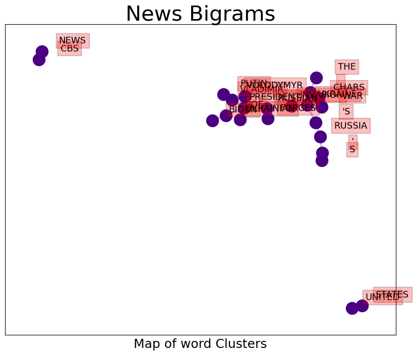

✅ Topic: 📈 Roe v. Wade 📈 Deep Analytics


Most trending image related to Roe v. Wade
AUTOMATED RESEARCH SUMMARY
Graph 1: most commonly tweeted words by Frequency

Trending Shared Image
Tweet Relationships

Sample-Tweets
Says guy who refused to "live with the outcome" of Roe V. Wade. These zealots have no shame with their blatant hypo… https://t.co/8LlH0bM30Z
@j70728118_j @allincork @sirimahanthesh Assassinations of doctors, nurses, patients. Shooting, bombings outside hos… https://t.co/k9zdh7vTkX
Richard Spencer did more to protect Roe V Wade than most twitter leftists when he voted for Joe Biden.
The most popular user is: cookie_lynch
RELATED METRICS
| Metric | Value |
|---|---|
| #1 Most tweeted to | tribelaw |
| #2 Most tweeted to | EudaimoniaEsq |
| #3 Most tweeted to | NoLieWithBTC |
| NewProfiles (less than 10 days) | 1.37 % |
| Tweeters with < 10 followers | 4.33 % |
| Tweeters with > 1000000 followers | 0.3 % |
Most Popular Tweet Terms
| Popularity Rank | Term |
|---|---|
| First | ROE |
| Second | V |
| Third | WADE |
| Fourth | PASS |
| Fifth | SUPREME |
Twitter Bio Analysis

Graph 2: These are the words the tweeters use to describe themselves.

Img: Bio Cloud
SENTIMENT ANALYSIS

Graph 3: Break down of the tweeting sentiment on the topic
| Popularity Rank | Term |
|---|---|
| SUBJECTIVE | 26.67% |
| NEGATIVELY-SUBJECTIVE | 33.33% |
| OBJECTIVE | 40.0% |
Sample Tweet
RT @ashtonpittman: If you haven't, take time to read my reporting on the long term strategy that Christian dominionists—who believe they ar…
Most Retweeted
RT @SenSanders: Congress must pass legislation that codifies Roe v. Wade as the law of the land in this country NOW. And if there aren’t 60…
Most retweeted person: cookie_lynch
Deeper Dive
Number of Top Words: 8 Number of Occurences: 1
Words: ROE V WADE SUPREME DRAFT OPINION COURT LEAK Type: Tweets
Sample: RT @LIFESAFEAST: I WHICH @SHANLONWU SMACKS DOWN TED CRUZ AND EXPLAINS WHY THE LEAK OF THE DRAFT SUPREME COURT OPINION ON ROE V WADE IS NOT…
Number of Top Words: 7 Number of Occurences: 5
Words: PASS MAJORITY VOTE SENATE WOMEN’S HEALTH RULE Type: Tweets
Sample: RT @TRIBELAW: MY 4-STEP PLAN: 1. PASS A SENATE RULE BY A MAJORITY VOTE TO GET RID OF THE FILIBUSTER. 2. PASS HR 3755, THE WOMEN’S HEALTH PR…
Number of Top Words: 6 Number of Occurences: 31
Words: ROE WADE SUPREME DRAFT OPINION COURT Type: Tweets
Sample: RT @FOXNEWS: CLARENCE THOMAS REFERENCES ROE V. WADE DRAFT OPINION LEAK, SAYS SUPREME COURT CAN'T BE 'BULLIED' HTTPS://T.CO/E3KYODX5PY
Number of Top Words: 5 Number of Occurences: 34
Words: ROE V WADE SUPREME OPINION Type: Tweets
Sample: RT @DEANOBEIDALLAH: PART OF GOP SUPREME COURT'S OPINION ENDING ROE V WADE USES THIS AS A JUSTIFICATION: "DOMESTIC SUPPLY OF INFANTS FOR ADO…
Number of Top Words: 4 Number of Occurences: 79
Words: ROE SUPREME SENATE COURT Type: Tweets
Sample: RT @MAYOISSPICYY: CAN WE TALK ABOUT HOW SUPREME COURT JUSTICES LIED UNDER OATH TO THE SENATE ABOUT ROE V. WADE?
Number of Top Words: 3 Number of Occurences: 236
Words: SUPREME DRAFT MAJORITY Type: Tweets
Sample: RT @NORAHODONNELL: EXCLUSIVE: IN @HILLARYCLINTON’S FIRST INTERVIEW SINCE THE MAJORITY DRAFT DECISION WAS LEAKED FROM THE SUPREME COURT, THE…
Number of Top Words: 2 Number of Occurences: 241
Words: ROE DRAFT Type: Tweets
Sample: RT @NOLIEWITHBTC: NEW: CLARENCE THOMAS IS COMPLAINING ABOUT THE NATIONWIDE PROTESTS AGAINST THE LEAKED DRAFT OVERTURNING ROE V. WADE, SAYIN…
Number of Top Words: 1 Number of Occurences: 158
Words: COURT Type: Tweets
Sample: IT'S NO WONDER HE RARELY SPEAKS DURING COURT APPEARANCES BECAUSE WHEN HE DOES, HE REVEALS JUST HOW FUCKING STUPID H… HTTPS://T.CO/UGG7OT1GPM
WIKIPEDIA ANALYTICS
TOPIC = 🎁 Roe v. Wade;
Random Image pulled from Wikipedia related to topic

Most frequent words by appearance related to this topic in subreddits
Wiki Word Clusers
Wiki Word Clustering based on top words
Wiki Deeper Dive
Number of Top Words: 7 Number of Occurences: 3
Words: ABORTION COURT STATE ABORTIONS LIFE HEALTH LAWS Type: Sentence
Sample: THE COURT RESOLVED THIS BALANCING TEST BY TYING STATE REGULATION OF ABORTION TO THE THREE TRIMESTERS OF PREGNANCY: DURING THE FIRST TRIMESTER, GOVERNMENTS COULD NOT PROHIBIT ABORTIONS AT ALL; DURING THE SECOND TRIMESTER, GOVERNMENTS COULD REQUIRE REASONABLE HEALTH REGULATIONS; DURING THE THIRD TRIMESTER, ABORTIONS COULD BE PROHIBITED ENTIRELY SO LONG AS THE LAWS CONTAINED EXCEPTIONS FOR CASES WHEN THEY WERE NECESSARY TO SAVE THE LIFE OR HEALTH OF THE MOTHER
Number of Top Words: 6 Number of Occurences: 5
Words: ABORTION COURT DECISION STATES SUPREME ABORTIONS Type: Sentence
Sample: == SUPREME COURT DECISION == ON JANUARY 22, 1973, THE SUPREME COURT ISSUED A 7–2 DECISION IN FAVOR OF "JANE ROE" (NORMA MCCORVEY) HOLDING THAT WOMEN IN THE UNITED STATES HAD A FUNDAMENTAL RIGHT TO CHOOSE WHETHER TO HAVE ABORTIONS WITHOUT EXCESSIVE GOVERNMENT RESTRICTION AND STRIKING DOWN TEXAS'S ABORTION BAN AS UNCONSTITUTIONAL
Number of Top Words: 5 Number of Occurences: 24
Words: ABORTION COURT DECISION STATES SUPREME Type: Sentence
Sample: IN JANUARY 1973, THE SUPREME COURT ISSUED A 7–2 DECISION IN MCCORVEY'S FAVOR RULING THAT THE DUE PROCESS CLAUSE OF THE FOURTEENTH AMENDMENT TO THE UNITED STATES CONSTITUTION PROVIDES A "RIGHT TO PRIVACY" THAT PROTECTS A PREGNANT WOMAN'S RIGHT TO CHOOSE WHETHER TO HAVE AN ABORTION
Number of Top Words: 4 Number of Occurences: 49
Words: ABORTION COURT STATES SUPREME Type: Sentence
Sample: SUPREME COURT IN WHICH THE COURT RULED THAT THE CONSTITUTION OF THE UNITED STATES PROTECTS A PREGNANT WOMAN'S LIBERTY TO CHOOSE TO HAVE AN ABORTION WITHOUT EXCESSIVE GOVERNMENT RESTRICTION
Number of Top Words: 3 Number of Occurences: 121
Words: ABORTION STATE LAWS Type: Sentence
Sample: FEDERAL AND STATE ABORTION LAWS
Number of Top Words: 2 Number of Occurences: 259
Words: ROE V Type: Sentence
Sample: ROE V
Number of Top Words: 1 Number of Occurences: 319
Words: DECISION Type: Sentence
Sample: 113 (1973), WAS A LANDMARK DECISION OF THE U
All major Wiki pages for chosen topic, word frequency of all comments ranked above
Wiki Citations
| Title | Url | pageID |
|---|---|---|
| Roe v. Wade | https://en.wikipedia.org/wiki/Roe_v._Wade | 68493 |
| Roe v. Wade (film) | https://en.wikipedia.org/wiki/Roe_v._Wade_(film) | 57616483 |
| Dobbs v. Jackson Women's Health Organization | https://en.wikipedia.org/wiki/Dobbs_v._Jackson_Women%27s_Health_Organization | 67689552 |
| Planned Parenthood v. Casey | https://en.wikipedia.org/wiki/Planned_Parenthood_v._Casey | 171811 |
| Roe v. Wade (disambiguation) | https://en.wikipedia.org/wiki/Roe_v._Wade_(disambiguation) | 67716730 |
Images Extracted from Web Search


Roe v. Wade IN THE NEWS 🗞 🗞 🗞
Most frequent words by appearance in the news
Headlines
| Source | Headline |
|---|---|
| CNN | Thomas says government institutions shouldn't be 'bullied' following leak of draft opinion on abortion |
| Fox News | Liberals ridiculed for 'laughably stupid' concern over what overturning Roe means for interracial marriage |
| Fox News | Tucker: The Democratic Party practices passive aggressiveness |
| NBC News | Roe v. Wade: How anti-abortion legislation could limit miscarriage care |
| Breitbart News | Warren: Gay Marriage, Interracial Marriage Imperiled by Draft Roe Decision |
| Breitbart News | CNN: Capitol Police 'Warning the Far Right Is Calling for Violence' after Supreme Court Leak |
| Breitbart News | Pro-Abortion Radicals to Terrorize Churches on Mother's Day |
| The Huffington Post | Hillary Clinton Has Ominous Warning About What's Next If Roe v. Wade Is Overturned |
| The Huffington Post | Gillibrand Attacks SCOTUS Draft Opinion On Roe: ‘I Would Like To Speak To America’s Men’ |
| Fox News | Bill Maher pushes back at pro-choice alarmists: 'We're not going back to 1973' if Roe v Wade is overturned |
| Breitbart News | Pelosi: Alito Opinion Poses ‘Severe Danger to the Constitution’ |
| The Huffington Post | Clarence Thomas Reportedly Rips Americans 'Addicted' To Certain Outcomes From Court |
| Fox News | Democrats to force Senate vote on abortion bill after Supreme Court leak |
| NBC News | Roe v. Wade live updates: Protests rage on over leaked abortion ruling |
| Breitbart News | Watch Live: Pro-Life Activists Outside SCOTUS Justice Alito's House to Thank Him |
| The Verge | What does the future of abortion look like? |
| The Huffington Post | Reproductive Justice Groups Frustrated By Democrats' Modified Bill To Codify Roe |
| The Huffington Post | Americans Can Get Abortions In Canada If Roe Is Overturned, Canada Official Says |
| Fox News | Hannity: Violence and intimidation, the Democrats' favorite tactic |
| Fox News | Tucker: Biden has turned out to be an unparalleled disaster |
| Breitbart News | WH Resists Condemning Protesters Descending on Supreme Court Homes |
| Breitbart News | Report: Antifa Attacks a Crisis Pregnancy Center in Portland: 'F*ck CPC' |
| Breitbart News | Dem Sen. Warner Denounces Threats from 'Outrageous Extremists' on SCOTUS Justices |
| The Huffington Post | Hillary Clinton Has Ominous Warning About What's Next If Roe v. Wade Is Overturned |
| The Huffington Post | Gillibrand Attacks SCOTUS Draft Opinion On Roe: ‘I Would Like To Speak To America’s Men’ |
| Fox News | Ex-Trump official on 'Ruth Sent Us': We've heard this 'peaceful protest' language before |
| Fox News | Pro-abortion groups target churches for Mother's Day protests |
| CBS News | Hillary Clinton on what happens if Roe v. Wade is overturned: "You have no idea who they will come for next" |
| NBC News | How the Supreme Court could proceed with the Roe leak probe |
| Fox News | John Roberts: Supreme Court draft leak 'absolutely appalling' |
| NBC News | Abortion laws worldwide: In what countries is abortion legal? |
| Breitbart News | Hillary Alum Lauds Leaker: 'Brave Clerk' May Be Warning America of Roe Overturn in 'Last-Ditch Hail Mary Attempt' to Stop It |
| The Verge | Cycle-tracking apps stand behind their privacy policies as Roe teeters |
| The Huffington Post | Jill Biden Calls Leaked Supreme Court Draft On Abortion Rights 'Shocking' |
| CNN | It's impossible to wall off reversing Roe from landmark marriage and contraception rulings |
| Fox News | California Gov. Gavin Newsom on Roe v. Wade leak: 'If men could get pregnant...' |
| Fox News | Supreme Court leak is an ‘unforgivable sin’: Barr |
| CBS News | Leaked Supreme Court documents spark protest over abortion rights nationwide |
| NBC News | Roe v. Wade live updates: Reactions to Supreme Court leaked abortion ruling |
| Breitbart News | Flip-Floppin' Joe Biden Once Voted to Overturn Roe v. Wade |
| Breitbart News | Poll: Plurality of Likely Voters Support Overturning Roe v. Wade |
| Breitbart News | CBS' Stephen Colbert Launches Vulgar Ten Minute Rant Against SCOTUS Justices over Roe v. Wade |
| The Huffington Post | Another Red State Slashes Abortion Access As Supreme Court Prepares To Kill Roe |
| The Huffington Post | What It Would Take For Abortion Rights To Be Codified Into U.S. Law |
| The Huffington Post | Who Leaked The Supreme Court Draft? Here Are 4 Theories |
| Fox News | Lara Trump: The MAGA movement started because of people like Biden |
| Fox News | Liberal group calls for protests at conservative Supreme Court justices' homes |
| NBC News | Roe v. Wade live updates: Protests rage on over leaked abortion ruling |
| Breitbart News | Pollak: Biden Owns His Role in Bork Fiasco, Launching America's Judicial Wars |
| Breitbart News | Adam Schiff on SCOTUS Breach: 'I Don't Care How the Draft Leaked' |
| Breitbart News | Meet the Companies That Will Help with Employees' Abortions |
| The Huffington Post | Americans Can Get Abortions In Canada If Roe Is Overturned, Canada Official Says |
| CBS News | Democrats look to rally base on abortion rights as economic concerns loom |
| The Huffington Post | Reproductive Justice Groups Frustrated By Democrats' Modified Bill To Codify Roe |
| ABC News | Collins hits Kavanaugh, Gorsuch after leaked Supreme Court draft opinion on abortion |
| ABC News | Schumer vows abortion law vote, but not filibuster changes |
| ABC News | Nation reacts to leaked draft Supreme Court decision that could overturn Roe v. Wade |
| CNN | Analysis: Does it matter that most Americans want to keep Roe v. Wade? |
| CNN | What we know about the investigation into the Supreme Court leak |
| CNN | Watch how Fox News and MSNBC hosts react to Roe v. Wade draft opinion - CNN Video |
| CNN | Opinion: The real reason America could buck the global trend on abortion |
| CNN | John Roberts calls release of draft Roe v. Wade reversal a 'singular and egregious breach' of trust |
| CNN | These are the US states where abortion rights could be under threat if Roe v. Wade is overturned |
| Fox News | Fox News Poll: Just over half favor banning abortions after 15 weeks |
| Fox News | 'We're going to find out' identity of Roe v. Wade leak source: GOP lawmaker |
| Fox News | Wisconsin lawmaker criticized for calling women ‘birthing bodies’ in tweet about abortion |
| Fox News | How leaks are a 'custom' on Capitol Hill |
| Fox News | Biden reacts to Roe v. Wade draft decision: 'Whole range of rights are in question' |
| CBS News | Companies fill the void as states restrict abortion rights |
| CBS News | Senator Amy Klobuchar on leaked Roe v. Wade draft opinion: "Complete chaos if this goes through" |
| NBC News | Roe v. Wade live updates: Supreme Court decision to overturn leaked |
| Breitbart News | Left Spreads Fear: Overturning Roe Means Ending Interracial Marriage |
| Breitbart News | Watch Live: Pro-Abortion Activists Protest Outside Supreme Court |
| Breitbart News | Ron DeSantis: SCOTUS Leak Is 'Judicial Insurrection' |
| Breitbart News | Chief Justice Orders Investigation of Supreme Court Leak in Case Overruling Roe v. Wade |
| Breitbart News | Kamala Harris: 'This Is the Time to Fight' Pro-Life Movement Trying to 'Punish Women' |
| Breitbart News | Conservatives on SCOTUS Roe v. Wade Leak: ‘Landmark Day' for Life |
| Breitbart News | Warren: Congress 'Gets the Final Word' on Roe v. Wade -- It Is 'on the Ballot' |
| Breitbart News | FACT CHECK: Alito Decision on Abortion Specifically Denies Other Personal Rights Affected by Reversing Roe |
| Breitbart News | Murkowski: If Court Rules the Way Leaked Draft Indicates It Will, 'It Rocks My Confidence in the Court' |
| The Huffington Post | Republicans Suddenly Don't Want To Talk About Banning Abortion |
| The Huffington Post | The U.S. Is One Of The Only Countries Moving Backward On Abortion Rights |
| The Huffington Post | Sen. Elizabeth Warren Is Really, Really Ticked Off |
| The Huffington Post | Leaked SCOTUS Opinion Pushes Biden To Say 'Abortion' For The First Time In His Presidency |
| The Huffington Post | Chief Justice John Roberts Confirms Leaked Draft Opinion On Abortion Is Authentic |
| The Huffington Post | Susan Collins Dismayed Supreme Court Justices Misled Her On Abortion |
| The Huffington Post | Joe Biden Says Roe v. Wade Shouldn't Be Overturned After Supreme Court Abortion Leak |
| CNN | Toobin pushes back on former GOP lawmaker about Roe v. Wade - CNN Video |
| Fox News | Tucker: Point of the Supreme Court leak was to intimidate conservative justices |
| CBS News | 5/3: Red and Blue |
| CBS News | U.S. reacts to leaked Supreme Court opinion draft on abortion |
| CBS News | Leaked Supreme Court draft threatens Roe v. Wade |
| CBS News | Kamala Harris reacts to Roe v. Wade draft opinion |
| Breitbart News | Left Freaks Out over Roe v. Wade Leak: 'F**k the Supreme Court' |
| The Huffington Post | What It Would Take For Abortion Rights To Be Codified Into U.S. Law |
| The Huffington Post | Who Leaked The Supreme Court Draft? Here Are 4 Theories |
| Fox News | Former Supreme Court law clerk on Roe v. Wade opinion leak: 'Raises questions' over leaker's motives |
| Fox News | Americans react to Supreme Court leak on Roe v. Wade draft decision |
| Fox News | Supreme Court leak confirms Ruth Bader Ginsburg's prescient warning about Roe v. Wade |
| Fox News | 2024 presidential contenders weigh in on how Supreme Court leak may impact midterm elections |
| CBS News | Protests nationwide over Supreme Court leaked draft opinion on Roe v. Wade: CBS News Flash May 4, 2022 |
| CBS News | CBS Evening News, May 3, 2022 |
| NBC News | Roe v. Wade live updates: Reactions to Supreme Court leaked abortion ruling |
| Fox News | Biden says 'MAGA crowd' is 'most extreme political organization that's existed' in recent American history |
| Fox News | New Fox News poll shows voters' opinions about abortion |
| CBS News | Leaked Supreme Court documents spark protest over abortion rights nationwide |
| CBS News | White House, lawmakers react to leaked SCOTUS draft opinion |
| Breitbart News | Breitbart News Daily Podcast Ep. 128: Vance Wins in OH, Biden Gets Ghoulish on Abortion, Guest: Sen. Tom Cotton on SCOTUS, Ministry of Truth, Our Open Border |
| The Huffington Post | Biden: MAGA Crowd 'Most Extreme Political Organization' In Recent American History |
| CNN | Crowd gathers outside the Supreme Court after draft opinion circulated that would strike down Roe v. Wade |
| CNN | 'Stunning on so many levels': CNN legal analyst breaks down draft opinion from Politico - CNN Video |
| CNN | Supreme Court draft opinion that would overturn Roe v. Wade published by Politico |
| Fox News | Democrats condemn Supreme Court abortion draft as 'abomination,' urge Congress to codify Roe v Wade |
| Fox News | Leaked SCOTUS draft opinion suggests end to Roe v. Wade |
| Fox News | Supreme Court set to overturn Roe v. Wade, leaked draft opinion shows: report |
| CBS News | Democrats call for action. GOP voice support. Leaked Supreme Court Roe draft opinion sets stage for 2022 midterms |
| CBS News | Politico report: Supreme Court draft opinion would overturn Roe v. Wade |
| CBS News | Leaked draft opinion suggests Supreme Court will overturn Roe v. Wade |
| NBC News | A draft Supreme Court opinion indicates Roe v. Wade will be overturned, Politico reports in extraordinary leak |
| Breitbart News | Actor Andy Richter Downplays Leaked Supreme Court Opinion Overruling Roe v. Wade: 'Boo F**king Hoo' |
| Breitbart News | Supreme Court’s Roe v. Wade Draft Leak Is First in Modern History |
| Breitbart News | Bernie Sanders: Congress Must Eliminate Filibuster, Codify Roe v. Wade |
| Breitbart News | 'Pack the Courts!' Pro- and Anti-abortion Activists Face Off Outside Supreme Court |
| Breitbart News | SCOTUSBlog: Roe Leak Is the ‘Gravest, Most Unforgivable Sin’ |
| Breitbart News | Barricades Go Up Around Supreme Court After Alleged Leak |
| Breitbart News | Jonathan Turley: Supreme Court Leak ‘Original Sin for Judicial Ethics’ |
| Breitbart News | Watch Live: Outside SCOTUS as Nation Learns of Alleged Draft Ruling Overturning Roe v. Wade |
| Breitbart News | Leak: Supreme Court to Overrule Roe, Returns Abortion to Voters |
| The Huffington Post | Chuck Schumer, Nancy Pelosi: GOP Supreme Court Justices 'Lied' About Abortion |
| The Huffington Post | Here's Where Abortion Will Likely Be Illegal If SCOTUS Overturns Roe |
| The Huffington Post | 'Nightmare Scenario': Lawmakers, Organizers React To SCOTUS Leaked Draft To Overturn Roe |
| CNN | These are the US states where abortion rights could be under threat if Roe v. Wade is overturned |
| Fox News | President of pro-life group 'optimistic' Supreme Court will resist 'intimidation' in overturning Roe v. Wade |
| Fox News | Kristi Noem vows to secure 'right to life' for the unborn if Supreme Court does overturn Roe v. Wade |
| CBS News | Leaked draft opinion suggests Supreme Court to overturn Roe v. Wade: CBS News Flash May 3, 2022 |
| The Huffington Post | Rep. Jamie Raskin Rips Supreme Court Draft Against Roe v. Wade |
| The Huffington Post | Fox News Pundits Call Supreme Court Leak An 'Insurrection' |
| ABC News | Collins hits Kavanaugh, Gorsuch after leaked Supreme Court draft opinion on abortion |
| ABC News | Schumer vows abortion law vote, but not filibuster changes |
| CNN | John Roberts calls release of draft Roe v. Wade reversal a 'singular and egregious breach' of trust |
| CNN | Analysis: It looks like Susan Collins bet wrong on Brett Kavanaugh and Roe v. Wade |
| CNN | Scrapping Roe v. Wade would make the US an outlier in the West |
| CNN | Video: Politico reporter explains why language in SCOTUS draft opinion is important - CNN Video |
| CNN | Reactions to Supreme Court draft opinion on Roe v. Wade: Live updates |
| Fox News | Sen. Chuck Schumer vows to hold vote to codify Roe v. Wade after Supreme Court leak: 'Abomination' |
| Fox News | Biden reacts to Roe v. Wade draft decision: 'Whole range of rights are in question' |
| Fox News | Supreme Court chief justice directs marshal to investigate leak, calls out 'egregious breach of ... trust' |
| Fox News | Biden on Supreme Court leak: Roe should not be overturned, 'A woman's right to choose is fundamental' |
| CBS News | Debating abortion in 1972, before Roe v. Wade |
| CBS News | Legal expert on Supreme Court leak and privacy rights under Roe V. Wade |
| CBS News | Roberts calls leak of draft Supreme Court opinion that would overturn Roe v. Wade a "betrayal" |
| CBS News | Democrats search for path forward if Supreme Court strikes down Roe v. Wade |
| NBC News | Roe v. Wade live updates: Supreme Court decision to overturn leaked |
| Breitbart News | Democrats Find Midterm Talking Point: Abortion |
| Breitbart News | Watch Live: Pro-Life, Pro-Abortion Crowds Clash Outside Supreme Court Following Roe Leak |
| Breitbart News | Donald Trump 2016: Roe v. Wade Will Be Overturned 'Automatically' if Elected |
| Breitbart News | Franklin Graham on Abortion Reversal: 'If True ... an Answer to Many Years of Prayers' |
| Breitbart News | Swalwell Uses Leaked Draft Roe v. Wade Decision to Drum up Midterms |
| The Huffington Post | Leaked SCOTUS Opinion Pushes Biden To Say 'Abortion' For The First Time In His Presidency |
| The Huffington Post | Chuck Schumer Says Senate Will Vote On Bill To Codify Roe v. Wade |
| The Huffington Post | Joe Biden Says Roe v. Wade Shouldn't Be Overturned After Supreme Court Abortion Leak |
| CBS News | Whitmer moves to protect Michigan's abortion rights ahead of Supreme Court decision that could upend Roe v. Wade |
| CBS News | Supreme Court signals support for upholding Mississippi's restrictive abortion law |
| CNN | Opinion: Why a 'war on abortion' is doomed to fail |
| The Huffington Post | Joe Biden: Abortion Rights ‘Under Attack As Never Before’ |
| The Huffington Post | GOP Filibusters Bill That Would Protect Abortion Rights If Roe v. Wade Falls |
| The Huffington Post | 3 Sundance Movies Tell Timely Stories About Abortion, But Also Miss The Mark |
| The Hill | Virginia's new Republican AG urges Supreme Court to overturn Roe v. Wade | TheHill |
| The Hill | The Memo: Biden looks for way to win back deflated Black voters | TheHill |
| The Hill | Virginia's new Republican AG urges Supreme Court to overturn Roe v. Wade | TheHill |
| Breitbart News | Post-Roe: Pro-Life Activists Vow to Protect Mothers and Babies While Planned Parenthood Touts More At-Home Abortions |
| Fox News | Democrats double down on eliminating filibuster, court packing on Roe v. Wade anniversary |
| CBS News | Saturday marks 49 years since Roe v. Wade ruling |
| The Hill | Biden says Roe v. Wade under attack like 'never before' | TheHill |
| The Hill | Donald Trump slams Jan. 6 panel after Ivanka Trump interview request: 'They'll go after children' | TheHill |
| The Hill | The Memo: Biden looks for way to win back deflated Black voters | TheHill |
| Fox News | Fox News Poll: While majority still supports Roe, opposition ticks up to new high |
| Reuters | Anti-abortion activists march in Washington, hoping it's the last time under Roe v. Wade |
| The Huffington Post | Is This The Last Anniversary Of Roe v. Wade? |
| The Hill | Biden says Roe v. Wade under attack like 'never before' | TheHill |
| ABC News | Some state lawmakers focusing on abortion access amid challenge to Roe v. Wade |
| The Huffington Post | Is This The Last Anniversary Of Roe v. Wade? |
| ABC News | Roe lawyer Sarah Weddington helped redefine abortion rights |
| CBS News | Sarah Weddington, lawyer who successfully argued Roe v. Wade to Supreme Court, has died at 76 |
| CBS News | Sarah Weddington, Texas lawyer who successfully argued Roe abortion case, dies at age 76 |
| Fox News | Roe v. Wade lawyer dies, former student says; as Supreme Court reconsiders landmark abortion case |
| The Huffington Post | Sarah Weddington, Lawyer Who Argued Roe V. Wade, Dies At 76 |
| ABC News | Sarah Weddington, lawyer who argued Roe v. Wade, dies at 76 |
| Breitbart News | 'Roe v. Wade' Lawyer Sarah Weddington Dead at 76 |
| ABC News | In abortion rights debate, Biden doesn't often use the word |
| Breitbart News | Pinkerton: Democrats Use the Threat of Court-Packing to Intimidate the Supreme Court from Overturning Roe |
| CNN | Analysis: Life can be tough for kids in many anti-abortion states |
| CNN | Opinion: What the Texas abortion decision portends for reproductive rights |
| NBC News | FDA to permanently allow abortion pills by mail, a major win for advocates |
| Breitbart News | Pro-Life Groups React to SCOTUS Letting Texas Heartbeat Law Stand |
| Breitbart News | Gavin Newsom: CA to Become Abortion ‘Sanctuary’ if Roe Overturned |
| Breitbart News | Exclusive — Pence: ‘I Know’ Roe V. Wade Will Be Overturned, Either in Mississippi Case or Future One |
| Breitbart News | Klobuchar: Pro-Choice Republicans Signaled Willingness to Codify Roe v. Wade into Law |
| Breitbart News | Exclusive -- Heritage Foundation President Kevin Roberts: 'I’m Convinced Roe v. Wade Is Going to Be Overturned' |
| Breitbart News | MS Gov. Reeves: If Roe v. Wade Overturned State Would Enact Stricter Abortion Ban |
| The Huffington Post | Susan Collins Silent On Major Supreme Court Case Challenging Roe v. Wade |
| CNN | If the Supreme Court curtails abortion rights it could flip the script on the 2022 midterm elections |
| CNN | Why John Roberts cited the private papers of the justice who wrote Roe v. Wade |
| CBS News | Legal expert weighs in on arguments in Supreme Court over Mississippi abortion law |
| Breitbart News | Breitbart News Daily Podcast Ep. 23: Mark Levin on the Future of Roe, Fauci/Biden Mandates, BLM B.S. |
| The Huffington Post | Susan Collins Silent On Major Supreme Court Case Challenging Roe v. Wade |
| The Huffington Post | My Religion Is Guiding My Pregnancy. Overturning Roe v. Wade Would Take Away My Freedom. |
| Fox News | Ben Shapiro: Supreme Court's likely outcome in Mississippi abortion case is a split decision on Roe v. Wade |
| Fox News | Turley: Pro-choice side will be disappointed with Kavanaugh |
| NBC News | Supreme Court set to dive into Mississippi abortion case challenging Roe v. Wade |
| The Huffington Post | Democrats And Abortion Rights Leaders React To Supreme Court Arguments |
| CNN | Analysis: John Roberts has a plan that would gut -- yet save -- Roe v. Wade. Can it work? |
| The Huffington Post | My Religion Is Guiding My Pregnancy. Overturning Roe v. Wade Would Take Away My Freedom. |
| The Huffington Post | Roe v. Wade In Serious Peril After Dramatic Supreme Court Arguments |
| CNN | What to watch for as the Supreme Court reconsiders Roe v. Wade |
| Fox News | Brett Kavanaugh is key to high-stakes abortion case |
| CNN | Supreme Court takes up Mississippi law banning abortions after 15 weeks and the future of Roe v. Wade |
| Fox News | Supreme Court hearing oral arguments in case that could overturn landmark abortion ruling in Roe v. Wade |
| CBS News | Listen Live: Supreme Court hears arguments in major Mississippi abortion case |
| CNN | Live updates: Supreme Court takes up abortion case to decide fate of Roe v. Wade |
| Fox News | Supreme Court to hear Mississippi abortion case that could overturn Roe v. Wade: LIVE UPDATES |
| NBC News | Supreme Court set to dive into Mississippi abortion case challenging Roe v. Wade |
| Breitbart News | Kagan: Abortion 'Part of the Fabric of Women's Existence in This Country' |
| Breitbart News | Supreme Court Liberals Grandstand to Defend Roe v. Wade in Dobbs Arguments |
| Fox News | Dem senator warns Supreme Court of 'revolution' if Roe v. Wade is overturned |
| The Hill | Supreme Court to hear landmark abortion case this week | TheHill |
| Fox News | Supreme Court to take up Mississippi abortion law that targets Roe v Wade |
| Fox News | Supreme Court to take up Mississippi abortion law that targets Roe v Wade |
| The Huffington Post | The Human Cost Of Being Denied An Abortion |
| CNN | Opinion: Why overturning Roe v. Wade would be a disaster for conservatives |
| The Huffington Post | The Human Cost Of Being Denied An Abortion |
| ABC News | Majorities back maintaining Roe v. Wade, oppose states' abortion clinic restrictions (POLL) |
| The Hill | Americans by 2-1 margin say Supreme Court should uphold Roe v. Wade | TheHill |
| NBC News | As Supreme Court considers abortion cases, local governments impose bans |
| CNN | Overturning Roe could mean women seeking abortions have to travel hundreds of miles |
| Reuters | Texas targets Roe v. Wade, urges U.S. Supreme Court to maintain abortion ban |
News Word Clusters

Description of how words cluster together
REDDIT ANALYTICS
TOPIC = 🍕 Roe v. Wade;

Most frequent words by appearance related to this topic in subreddits
Reddit Word Clustering

Reddit Citations
| Title |
|---|
| Draft Overturning Roe v. Wade Quotes Witch Trial Judge Upvote Ratio: 0.93% URL: https://www.propublica.org/article/abortion-roe-wade-alito-scotus-hale |
| UN says reproductive rights are ‘foundation’ of gender equality. A leaked Supreme Court draft opinion signaled the overturning of Roe v. Wade. Upvote Ratio: 0.98% URL: https://abcnews.go.com/amp/International/reproductive-rights-foundation-gender-equality/story?id=84491621 |
Reddit Deeper Dive
Number of Top Words: 8 Number of Occurences: 1
Words: PEOPLE ABORTION ALITO WAY MAKE WOMEN BACK YEARS Type: Sentence
Sample: IT DOESN'T EVEN QUOTE HIM CORRECTLY. ALITO DOESN'T SEEM TO KNOW WHAT 'QUICKENED' IS, AND IT'S AMAZING HOW HE COULD FIND THESE OPINIONS TO USE IT WHILE NOT KNOWING WHY THAT WORD MIGHT APPEAR THERE. EDIT: IT'S BEEN POINTED OUT TO ME HE DOES DEFINE IT. FUN FACT; ABORTION IS NOT NEW BUT THE PUSH TO MAKE IT FULLY ILLEGAL IS. THROUGH EARLIER AGES LAWS AGAINST ABORTION WERE OFTEN SPOTTY, UNENFORCED, OR IGNORED. YOU'LL FIND PLENTY OF LETTERS AND WRITINGS DISCUSSING IT AND THEY'RE NOT ALL ANTI-ABORTION DESPITE THE TIMES. PEOPLE THEN WERE FAR MORE NUANCED THAN YOU'D THINK. A LOT OF THEM LEFT THE ENTIRE QUESTION UP TO WOMEN, OR WOMEN SIMPLY KEPT THE MATTER ENTIRELY TO THEMSELVES. YOU WILL SEE THE WORD 'QUICK' OR 'QUICKENED' SOMETIMES. THIS REFERS TO WHEN A BABY STARTS MOVING IN THE WOMB. SOME SOCIETIES EVEN THOUGHT THIS WAS THE MOMENT THE SOUL ENTERED THE BODY (I.E. YOU WEREN'T BORN WITH IT). ALITO CITES THESE SECTIONS AS THOUGH THEY MAKE ABORTION A CRIME, BUT THAT'S NOT WHAT THEY SAY. THEY SAY THAT ABORTING A CHILD AFTER IT HAS QUICKENED IS A CRIME. I.E. WHAT MIGHT NOW BE CALLED A LATE-STAGE ABORTION. IF YOU'RE GOING TO CITE JURISTS FROM 400 YEARS AGO, AT LEAST DO US THE DECENCY OF CITING THEM CORRECTLY. THEN EXPLAIN WHY THE FUCK WE SHOULD CARE WHAT THIS ENGLISH BLOKE THOUGHT ABOUT THE MATTER. WHAT HAPPENED TO TEXTUALISM? I THOUGH CONSERVATIVES WERE HIGH ON THAT NOTION. IS ALITO SO SHORT ON A TEXTUAL BASIS HE HAS TO REACH ALL THE WAY BACK TO THE MAGNA CARTA?
Number of Top Words: 7 Number of Occurences: 1
Words: PEOPLE COURT WAY MAKE BACK COUNTRY SUPREME Type: Sentence
Sample: THANK YOU SUPREME COURT FOR SETTING THE U.S.A. BACK TO 1630'S PLYMOUTH ROCK. THE CITIZENS OF THIS FINE COUNTRY APPRECIATE YOUR EFFORTS ON BEHALF OF A MAKE BELIEVE GOD AND A LOT OF WEALTHY PEOPLE WITH A LOT OF MONEY. BY THE WAY AMY - HOW'S THAT MILLION DOLLAR BOOK DEAL COMING ALONG? BY THE WAY KAVANAUGH THE YOWLER - WHO PAID OFF THAT MILLION DOLLARS YOU OWED?
Number of Top Words: 5 Number of Occurences: 3
Words: HALE ALITO WOMEN BACK YEARS Type: Sentence
Sample: HEADLINE TALKS ABOUT WITCHES. ACTUAL IMPORTANCE IS THAT HALE IS THE GUY WHO MADE UP WHOLE CLOTH THE IDEA THAT WOMEN CAN’T BE RAPED BY THEIR HUSBANDS, AND MADE UP WHOLE CLOTH THE LEGAL IDEA THAT RAPE ACCUSATIONS ARE SUSPECT A PRIORI. THESE IDEAS WERE PRECEDENT FOR 300 YEARS, UNTIL THE 1970S. SO IN ORDER TO CITE PRECEDENT ALITO STRETCHED BACK 300 YEARS TO A GUY WHO LITERALLY MADE UP FROM SCRATCH IDEAS ABOUT HOW RAPISTS WEREN’T REALLY RAPISTS. OKAY.
Number of Top Words: 4 Number of Occurences: 3
Words: HALE COURT WAY SUPREME Type: Sentence
Sample: EITHER: 1) A SUPREME COURT JUSTICE AGREES WITH HALE ON THESE TOPICS, 2) A SUPREME COURT JUSTICE DOESN'T THINK HALE'S VIEWS ON THIS ARE A PROBLEM, OR 3) A SUPREME COURT JUSTICE IS SO BAD AT LEGAL RESEARCH HE WAS UNAWARE THAT HALE HAD THESE VIEWS. THERE IS NO WAY THIS ISN'T BAD.
Number of Top Words: 3 Number of Occurences: 9
Words: PEOPLE WITCH JUDGE Type: Sentence
Sample: WITCH TRIAL JUDGE THAT ALSO BELIEVED THAT GHOSTS SPEAKING TO PEOPLE IN THEIR SLEEP WAS ADMISSIBLE IN COURT.
Number of Top Words: 2 Number of Occurences: 14
Words: MAKE SHIT Type: Sentence
Sample: YOU CAN'T MAKE THIS SHIT UP !! NUTS ....
Number of Top Words: 1 Number of Occurences: 35
Words: JUDGE Type: Sentence
Sample: THIS ENGLISH JUDGE ALSO DIDN’T BELIEVE IT WAS POSSIBLE FOR A HUSBAND TO RAPE HIS WIFE BECAUSE MARRIAGE = PERMANENT CONSENT OR SOMETHING.
All major SubReddits scanned for chosen topic, word frequency of all comments ranked above
CONCLUSION & EXTERNAL ANALYSIS

Google Murchie85 for more of my stuff, or email me at murchie85@gmail.com
These analytics were auto generated, there is no opinion on the data from the tweets, it serves as no objective truth.Since the tweets themselves are a mixture of fact & opinion.
Authors analytical summary on request.